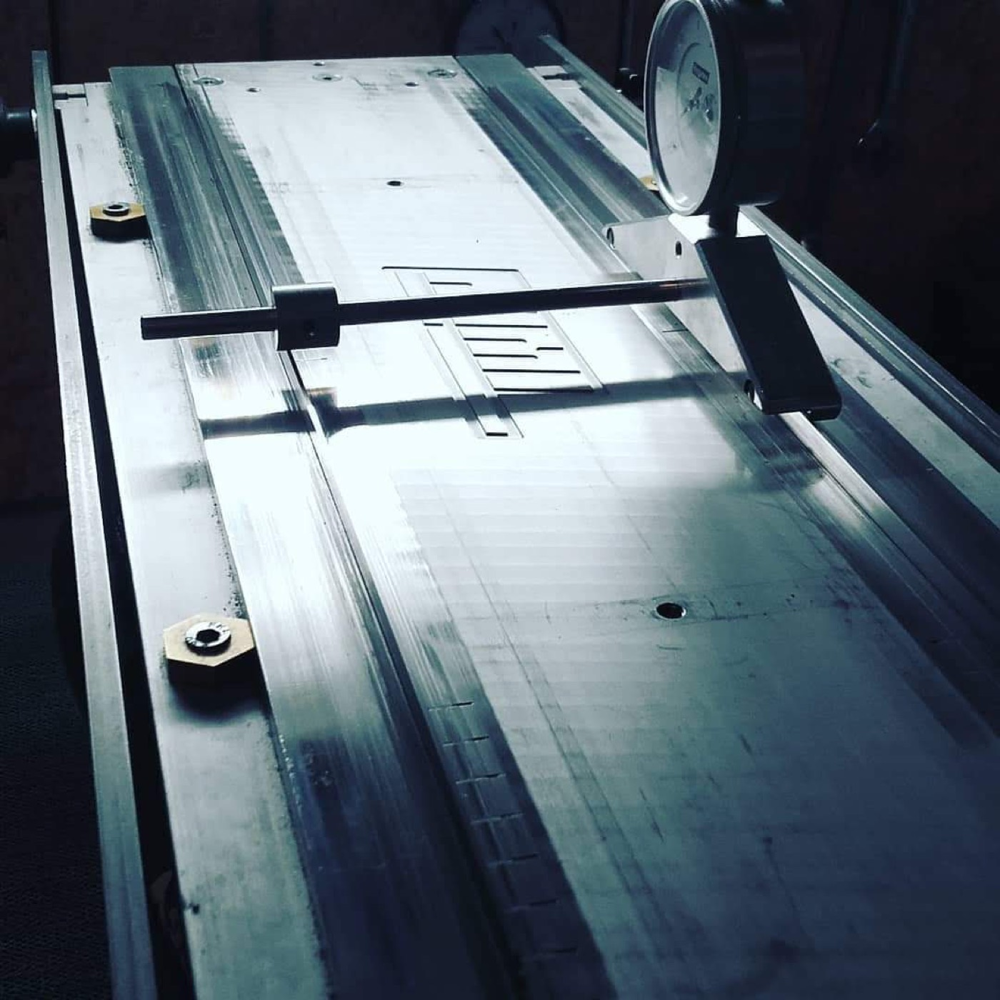
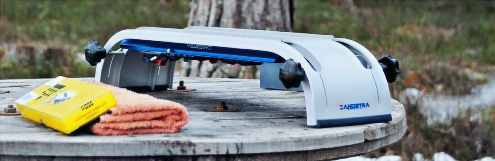

Sharpening and adjusting
Sharp skates that fit right under you. Handwork, from years in the 11shop at the Elfstedenhal.
A skate that doesn't fit under you costs you more than a skate that isn't sharp.
Sharpening makes your skate sharp. Skate fitting makes sure it stands right. Those are two different things, each with its own rate.
Go to skate fittingWhat it costs
Sharpening
- Hand-sharpened touring skates
- €16
- Rounding & sharpening touring skates
- €27
- Hand-sharpened curve
- €65
A hand-sharpened curve is custom work: which curve suits you depends on your skate, your equipment and above all on how you skate.
Maintenance and adjustment work
- Maintenance (full check)
- from €35
- Bending and aligning, first half hour
- €35
- Each additional half hour
- €30
- Repair
- on request
Bending and aligning also applies to short track. For repairs, the price depends on the time and the parts needed.
Pickup & drop-off
Can't make it in person? In the area I can pick up and drop off your skates for a small fee, and sharing costs is possible.
Reach from Noordwolde: Wolvega, Appelscha, Oosterwolde, Steenwijk, Vledder and Heerenveen - about twenty minutes' drive.

Everything checked, not just sharpened
During a maintenance check the whole skate is gone over: rounding, sharpening and polishing, plus the springs, bumpers, pins, bolts and hinge.
If any parts need replacing, you'll hear about it beforehand.
Adjusting your skate under your foot
Something different from sharpening. Here we look at the position of your skate and adjust it to how you ride.
- 1
Intake
Your riding style, your equipment and what's holding you back.
- 2
Basic adjustment
The skate is adjusted to your foot and stance.
- 3
Ice observation
You skate, Joey watches on the ice.
- 4
Adjustments
Fine-tuning based on what was seen.
- 5
Check
One more pass to confirm it's right.
Skate fitting rates
- Individual, per hour
- €95
- Together, two people
- €140
- Follow-up appointment
- €65
Wedges, springs or other parts are charged separately. For skate fitting on location, travel costs are charged separately.
Frequently asked questions about skate maintenance
What is the difference between sharpening and skate fitting?
Sharpening makes your skate sharp. Skate fitting makes sure it stands right. Those are two different things, each with its own rate.
What does sharpening my skates cost?
Hand sharpening of touring skates costs €16, rounding & sharpening €27, and a hand-sharpened curve €65.
What does a maintenance check involve?
During a maintenance check the whole skate is gone over: rounding, sharpening and polishing, plus the springs, bumpers, pins, bolts and hinge. If any parts need replacing, you'll hear about it beforehand. A maintenance check costs from €35.
What does skate fitting cost?
Individually, per hour, skate fitting costs €95, together with two people €140, and a follow-up appointment €65. Wedges, springs or other parts are charged separately. For an appointment on location, travel costs are added.
Want your skates checked?
Let us know what skates you have and what you use them for, and you'll hear what's needed.
A sharpening workshop, where you learn to do it yourself, is also an option.